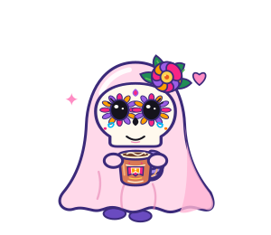

Boo-ddy
Your sweet, shy first hello.
YOUR LITTLE DESKTOP COMPANION
A shy, sweet desktop friend who cheers your tiny wins, listens to your whispers, and keeps its thoughts right at home.
SIX LITTLE PERSONALITIES
Meet the ghost friends, each with their own colors, signature details, and a face that can change with your mood.
Your sweet, shy first hello.

A little lavender magic.

Warm, autumn-orange cheer.

A friendly hint of spooky.

Your soft little comfort ghost.

Quiet company, whenever you need.
Each ghost can wear a sugar-skull mask or keep its original face.
FEELINGS, BUT MAKE THEM GHOSTLY
Little reactions bring your companion to life, without making a big fuss about it.
A GENTLE LITTLE ROUTINE
Boo-buddy stays out of the way until you want a moment of company.
Click your ghost to get a gentle reaction or open the whisper box for a quiet chat.
Choose a friend, switch between the sugar-skull look and classic faces, and pick a local model.
Soft floating, quiet check-ins, and a sleepy mood after midnight. No noisy dashboard needed.
Ctrl/Cmd + Shift + G changes ghosts · Ctrl/Cmd + Shift + M toggles masks
A PRIVATE LITTLE WORLD
Boo-buddy uses Ollama to run its language model on your computer. Your chat goes to the local Ollama service—not a hosted AI API.
NO SPELLBOOK REQUIRED
Everything is free to download. Ollama runs the model on your computer.
Get the local model runner from ollama.com.
Open a terminal and download Gemma 3 1B:
ollama pull gemma3:1bGet the latest release, open it, and say hello. You can also run the project from source.
Windows, macOS, and Linux instructions are in the project quick start.
A FEW LITTLE ANSWERS
No. Boo-buddy and the listed Ollama models are free to use. Your computer still uses disk space, memory, and electricity.
You need internet to download Ollama, the app dependencies, and a model. After that, the app and model can work offline.
Start the Ollama app. If needed, run ollama serve in a terminal and confirm the model is installed with ollama list.
Yes. Download one of the supported models and select it in Boo-buddy’s tray menu. The project guide has model setup details.
A LITTLE COMPANION FOR YOUR DESKTOP
Free, local, and quietly rooting for you.
Meet Boo-buddy